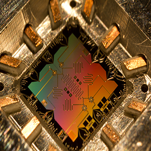
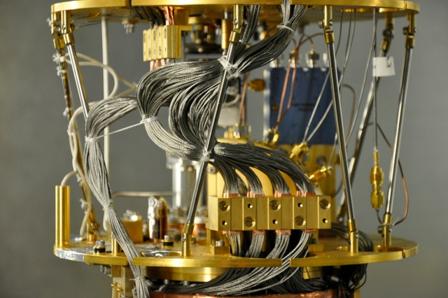

Technology
Step into the future with QuantumTech processing, a new processor architecture powered by quantum technology! Reach blazing new speeds with all-new computing power!

Prossesing with
Alpha 1

Quantum mechanics allow for a computer to read data in multiple states, known as a qubit. QuantumTech is our signature quantum computing processor architecture. It harnesses the power of quantum mechanics to create a processor faster than any standard computer.


Cooling
Cooling QuantumTech processors is ArcticKool Technology. Featuring our unique take on cooling, ArcticKool keeps components running at a stable, cool temperature, providing optimal performance.